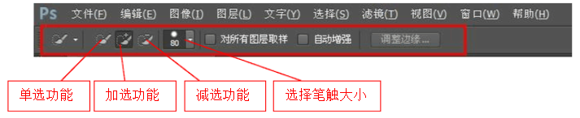
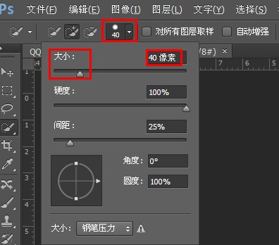
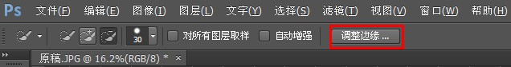
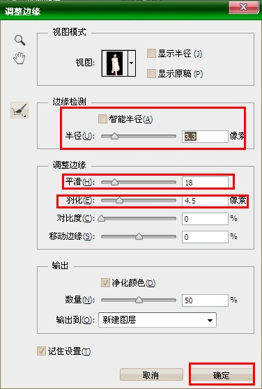
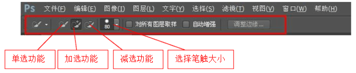
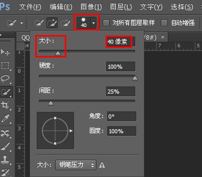
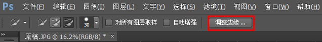
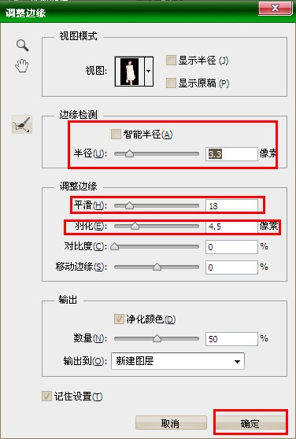

设置笔触大小
注意：在PhotoShop CS5及以上，才有快速选择工具！


调整边缘


在PS里,用快速选择工具时,老是会选多是怎么回事？
如果要是选多的话可以选择撤销一步操作，或者按住alt健进行减选操作，也可以选择调整边缘进行操作，效果可能会好些，也要知道快速选择工具使用是有限制的，有的图根本不适合用快速选择工具，所以要选择合适的工具。
注意：在PhotoShop CS5及以上，才有快速选择工具！




如果要是选多的话可以选择撤销一步操作，或者按住alt健进行减选操作，也可以选择调整边缘进行操作，效果可能会好些，也要知道快速选择工具使用是有限制的，有的图根本不适合用快速选择工具，所以要选择合适的工具。